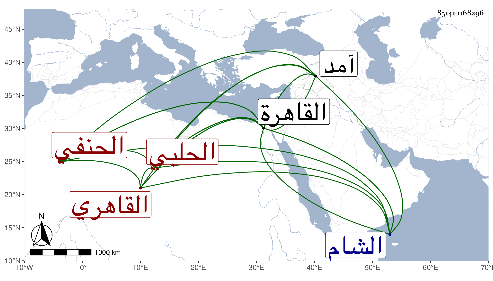

0902Sakhawi.DawLamic.ITO20230111-ara1.EIS1600.851410168296
Biography ID: 851410168296
344
أحمد بن محمد بن صالح الشهاب الحلبي ثم القاهري الحنفي نزيل الشيخونية ويعرف بابن العطار كان أبوه عطارا فقدم ابنه القاهرة فانتمى للزين التفهني وأخذ عنه الفقه وغيره ونزل بالصرغتمشية والشيخونية وصار أحد المقررين لسماع الحديث بالقصر عند السلطان فأقبل الأشرف عليه وأصغى في مقاله إليه ثم عرضت له ماليخوليا فأقام بها مدة ثم سافر إلى الشام وأخذ وهو هناك عن الشمس البرماوي بقراءته في شرح ألفية العراقي وأثنى عليه وعن غيره وصحب تغري بردي المحمودي واستقر إمامه بل عمله مباشر وقفه ولما اجتاز الأشرف بالشام سنة آمد انتمى لجوهر الخازندار ورجع معه إلى القاهرة فعاونه في إعادته بالصرغتمشية وغيرها كتوصف بالشيخونية وحلقة في البخاري ومعلوم بالخاص ، وصارت له وجاهة بحيث راج أمره عند من يصحبه أو يتردد إليه من الأمراء لما اشتمل عليه من التفنن والمهارة باللغة التركية حسن الشكالة مع الفصاحة والكرم وكذا قرا على الزين الزركشي صحيح مسلم وعلى شيخنا غالب البخاري وجميع شرح معاني الآثار للطحاوي وناب في العقود عن ابن الديري واعتذر عن رغبته فيه باضطراره في المجالس لمباشرته وإلا فما كان يقصر به عن أعلى ، وباشر قراءة البخاري عند حرماس الكريمي أمير مجلس الملقب فاسق ، بل لما مات شيخنا استقر عوضه في إسماع الحديث بالمحمودية ورام أخذ القراءة أيضا فنازعه البدر الدميري فيها متمسكا بعدم إمكان الجمع بين الوظيفتين وكانت بينهما قلاقل ، وامتحن في أيام الظاهر جقمق وضرب بين يديه ثم أمر بنفيه إلى الطينة لكونه قال ليوسف الرومي أحد صوفية الشيخونية وأصحاب الشمس الكاتب لما اجتاز به وهو في شباكها الكافياجي وأبو يزيد الرومي وقد أرخيا العذبة وقال لهما قد طولتما أذنابكما هذا يتضمن الاستهزاء بالسنة النبوية فهو كفر فانزعج يوسف من مقالته واستعان بالكاتب في إنهاء الأمر إلى السلطان بعد الاستفتاء والكتابة بعدم الاستلزام المقالة ذلك وراسل الشهاب شيخ المكان وهو الكمال بن الهمام يلتمس منه الشفاعة فيه مع كون الكمال منحرفا عنه فأجاب وكتب إلى السلطان رسالة نصها أما بعد فإن شهاب الدين بن العطار وإن كان رجلا فيه شدة فهو من أهل العلم وقد حصل له من التعزير زيادة من المبالغة وكونه أساء على خصمه فلا بد أن خصمه أيضا أساء عليه ولو أرسلتموها إلي لكفيتكم همهما وأصلحت بينهما الله إلا إن كنتم تصغروني وتستضعفون جانبي فترك الوظيفة لي أعز من التكلم فيها والقصد الصفح عنه والعفو من التقي وترك هذه الساعة العظيمة التي حصل بسببها الردع عن العود لمثلها وكذا شفع فيه غيره من الأمراء فأجاب واستمر مقيما بالقاهرة يدرس ويحدث إلى أن مات رحمه الله وقد اقتنى كتبا نفيسة وأشياء مهمة حضرت مبيعها . وممن أخذ عنه البرهان الكركي الإمام .
